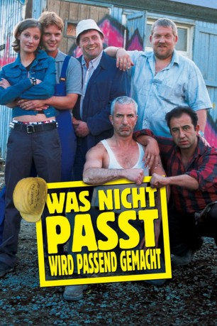

#2783 Was nicht passt, wird passend gemacht
 
 IMDB-Wertung: 6.6 / 10
IMDB-Wertung: 6.6 / 10  Metascore: 0
Metascore: 0 
Das Ruhrgebiet. Heute. Zwei Baustellen in einem Neubaugebiet, direkt nebeneinander, zwei konkurrierende Bauunternehmen, die von zwei zerstrittenen Brüdern geführt werden. Während die Firma Wiesenkamp Hoch&Tief gut organsiert und mit modernster Ausrüstung eine geschmacklose Villa hochzieht, baut auf dem Nachbargrundstück Werner Wiesenkamp Bau mit traditioneller Improvisationstechnik, frei nach dem Motto des Vorarbeiters Horst: Wat nich’ passt, wird passend gemacht!
Jahr: 2002
Dauer: 101 Minuten
FSK: 12
Land: Deutschland Studio: Senator FilmverleihTonspuren:
Untertitel:
Auflösung: 1080p (1920x1040) Größe: 8949 MB
Genre: Komödie
Regisseur: Peter Thorwarth
Drehbuch: Peter Thorwarth, Matthias Dinter, Martin Ritzenhoff
Soundtrack: Rainer Kühn
Darsteller:
- Peter Thorwarth als Philipp
 Alexandra Maria Lara als Astrid
Alexandra Maria Lara als Astrid- Armin Dillenberger als Marek
 Markus Knüfken als Andy
Markus Knüfken als Andy- Willi Thomczyk als Horst
 Ralf Richter als Kalle
Ralf Richter als Kalle- Hilmi Sözer als Kümmel
- Dietmar Bär als Werner Wiesenkamp
- Crescentia Dünßer als Urte
- Nicholas Bodeux als Arno
 Michael Brandner als Ernst Wiesenkamp
Michael Brandner als Ernst Wiesenkamp- Patrizia Moresco als Gerda Wiesenkamp
- Tana Schanzara als Mama Wiesenkamp
- Riccarda Menne als Kümels Frau
- Tilla Borgelt als Mädchen auf der Grillparty
- Birgit Stojanov als Grazyna
 Heinrich Giskes als Vereinsvorstand
Heinrich Giskes als Vereinsvorstand- Johannes Rotter als Jochen
- Jürgen Mikol als Gärtner
- Hans-Jürgen Teßmann als Kranführer
 Heinrich Schafmeister als Stadtrat
Heinrich Schafmeister als Stadtrat- Hans Martin Stier als Bürgermeister
- Stefan Jürgens als Architekt
- Hendrik Holler als Sanitäter I
- Mathias Dinter als Sanitäter II
- Karl Thorwarth als Polizeieinsatzleiter
- Achim Bauer als Polizist I
- Martin Thorwarth als Polizist II
- Matthias Heisig als Polizist III
- Thomas Ebert als Polizist IV
- Josef Volkering als Polizist mit Hund
- Thomas Graw als Polizeitechniker
- David Heinzel als Lieferant
- Fritz-Peter Lütyens als Partygast
- Björn Hebeler als Zivildienstleistender I
- Jörn Pollex als Zivildienstleistender II
- Uwe Lyko als Opa
- Uwe Faust als Arbeiter
- Justyna Müsch als Prostituierte
- Gabriela Castro als Prostituierte II
- Ivan Stein als Türsteher
- Fedor Welge als Prol I
- Sascha Grögor als Prol II
- Alexander M. Rümelin als LKW-Fahrer
- Andreas Olshausen als Walter
- Kirk Kirchberger als Dieter
- Martin Ontrop als Flugplatzangestellter
- Hans-Joachim Heist als 'Grüner' Politiker
- Werner Karle Jr. als Pilot
- Stefan Gräwe als Sparkassenangestellter
Datei: X:\3-Trilogie(N-Z)\Unna-Trilogie\Was nicht passt, wird passend gemacht (2002, FSK12, 1920x1040).mkv seit 14.12.2015
Festplatte: HD Collection-3(N-Z)-6(A-Z)
 Alle Filme aus Gruppe '3-Trilogie(N-Z)\Unna-Trilogie'
Alle Filme aus Gruppe '3-Trilogie(N-Z)\Unna-Trilogie'